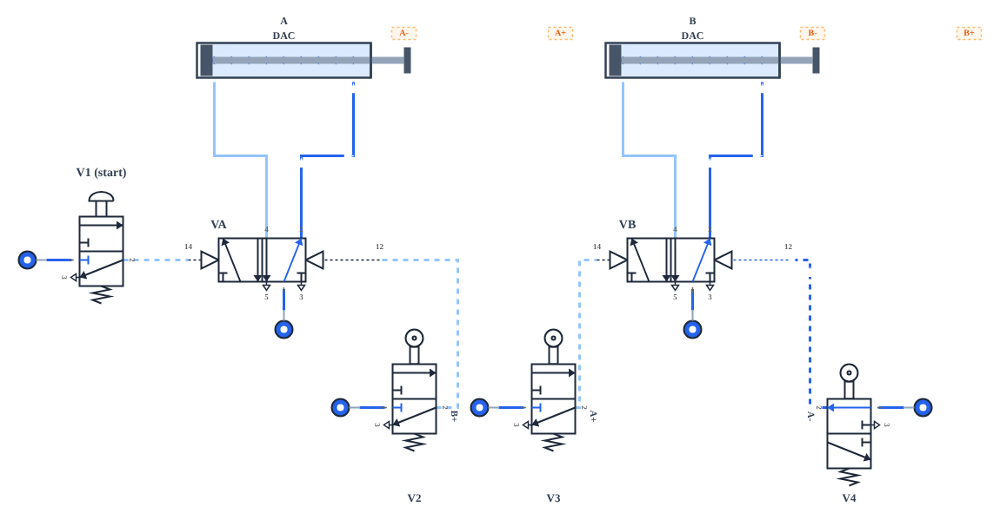
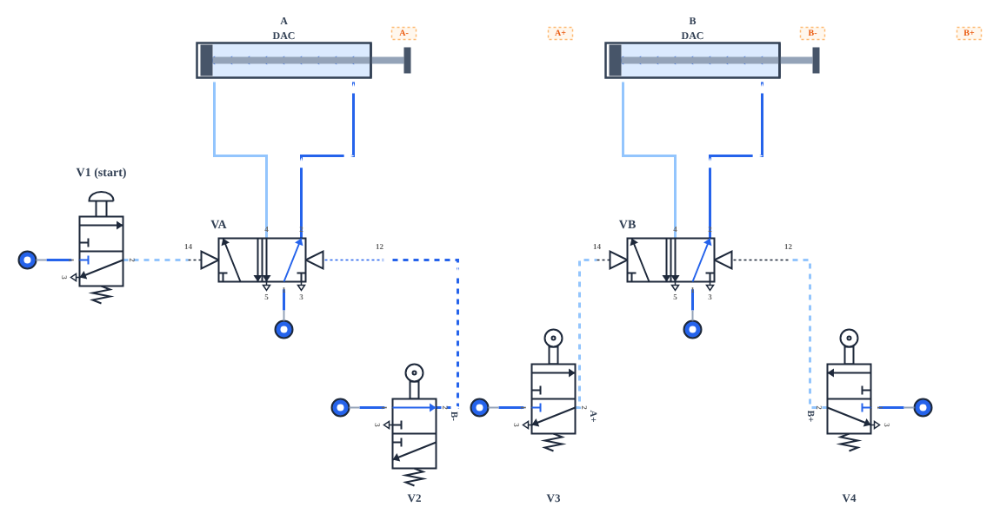
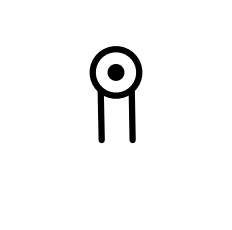
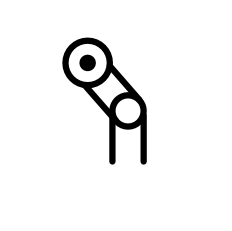
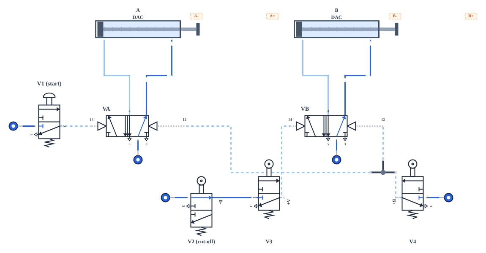
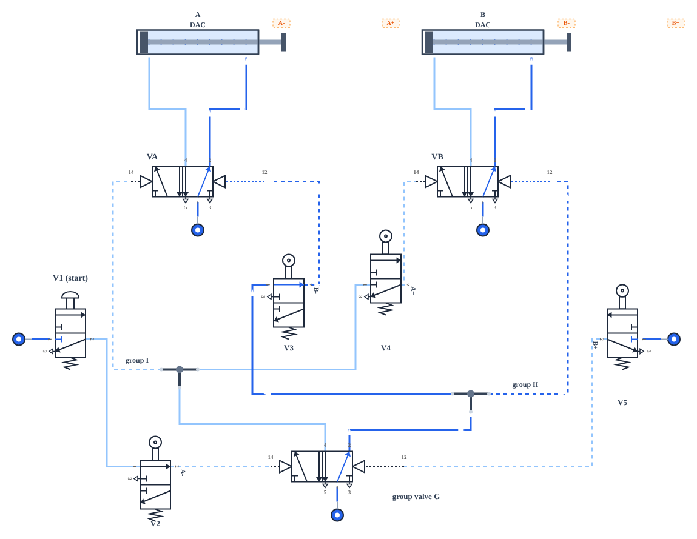
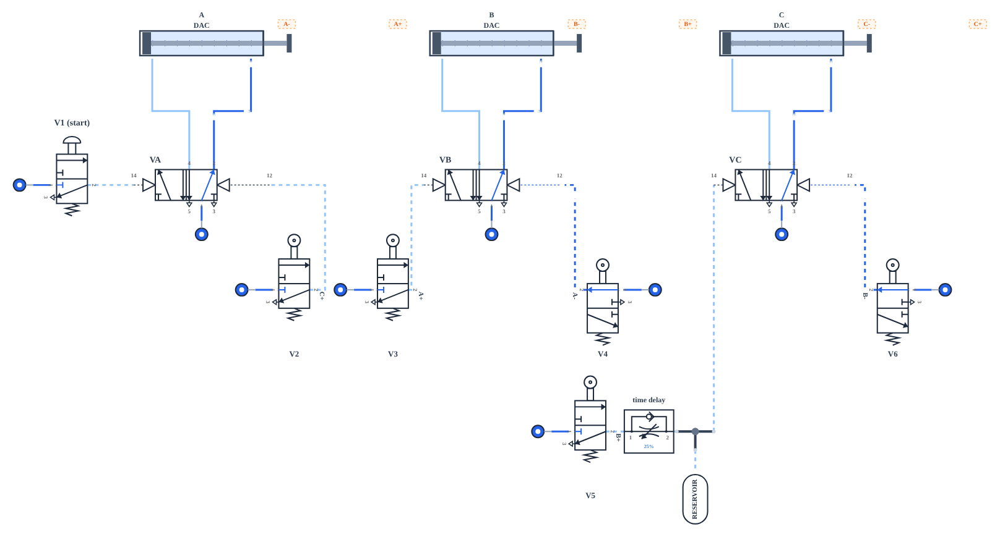
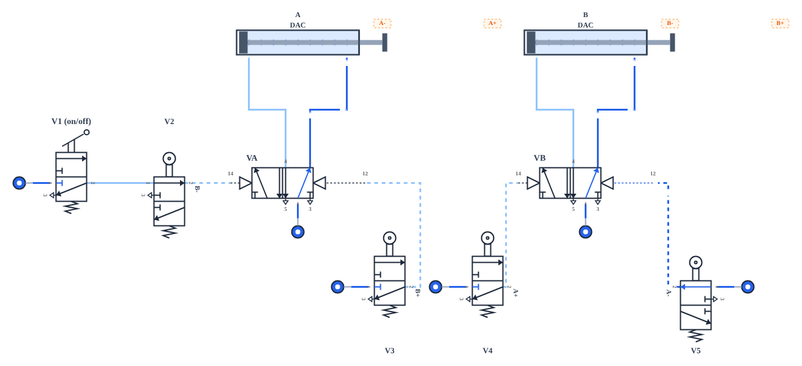
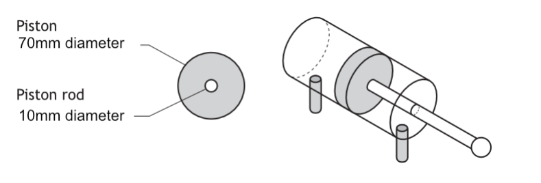
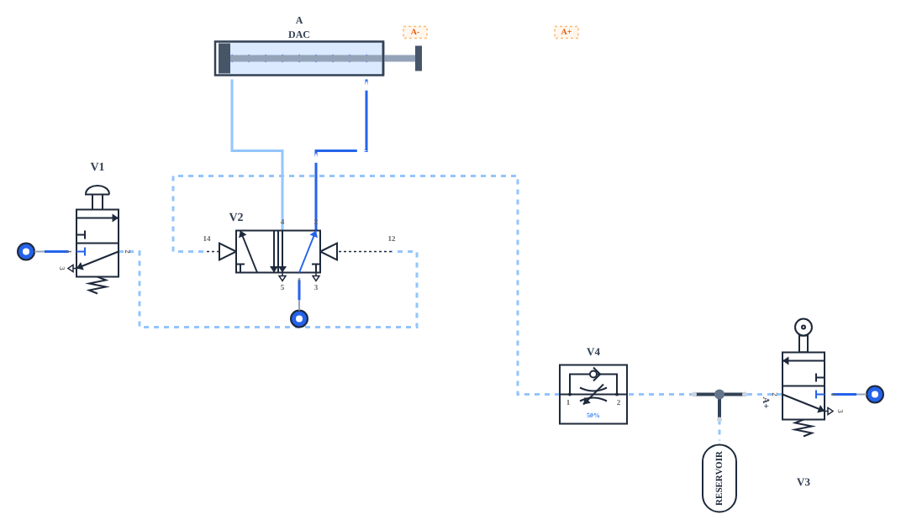

At National 5 most circuits control one cylinder, or two cylinders that move one after the other. At Higher you will analyse and describe circuits with up to three cylinders working in a sequence, find out why some sequences jam, and use cut-off valves and cascade circuits to fix them. You will also control pneumatic systems from a microcontroller, carry out calculations that combine pneumatics with energy, power and stress, and find faults in circuit diagrams. In the question paper, pneumatics is often worth 8 or more marks in a single question, and most of those marks come from describing a circuit clearly with the correct terms.
Every circuit in these notes can be run in the simulator. The valve labels (V1, V2, VA…) in each simulator match the circuit diagrams, so you can use the simulator to check your descriptions. You can also build your own circuits in the full No Pressure simulator.
Section 1: What You Should Already Know
Pneumatic systems use compressed air to move cylinders. A compressor fills a receiver, and the air is distributed by a manifold. Main air drives the cylinders; lower-pressure pilot air carries signals between valves and is drawn as a dashed line. Pressure is given in Nmm−2 (a typical school supply is about 0.2–0.6 Nmm−2).
| Component | What you need to remember | N5 notes |
|---|---|---|
| 3/2 valve | 3 ports, 2 states. Port 1 = main air in, port 2 = output, port 3 = exhaust. Named by ports/states, then actuator, then return: e.g. “3/2 push-button actuated, spring-return valve”. | Section 2 |
| Single-acting cylinder (SAC) | Air outstrokes it; an internal spring instrokes it. Controlled by a 3/2 valve. | Section 2 |
| T-piece / shuttle valve | A T-piece splits one supply. A shuttle valve gives OR control and stops air escaping through the other input. | Section 4 |
| AND control | Two 3/2 valves in series: air passes only when both are actuated. | Section 5 |
| Uni-directional restrictor (UDR) | Restricts flow in one direction only. Conventionally fitted to restrict the exhaust air leaving a cylinder. | Section 6 |
| Air bleed | A sensor: blocking the bleed builds pressure that operates a diaphragm-actuated valve. | Section 7 |
| 5/2 valve | 5 ports, 2 states. Port 1 main air; ports 4 and 2 to the two sides of a DAC; ports 5 and 3 exhaust. Usually pilot-operated on both sides (14 and 12) and stays in its last state. | Section 8 |
| Double-acting cylinder (DAC) | Main air drives both the outstroke and the instroke; controlled by a 5/2 valve. | Section 8 |
| Semi- / fully automatic circuits | Roller (limit) valves at the ends of the stroke switch the 5/2 valve automatically. | Sections 9–10 |
| Time delay | A UDR slowly fills a reservoir; the valve switches only when the reservoir pressure is high enough. | Section 11 |
| Solenoid valve | An electrical signal moves the valve, so a microcontroller can control the circuit. | Section 12 |
| Cylinder force | F = PA. On the instroke of a DAC the rod reduces the effective area. | Section 13 |
Remember why a double-acting cylinder needs a 5/2 valve: the 5/2 valve always connects main air to one side of the piston and exhausts the other, and because a pilot-pilot 5/2 valve stays in its last state, a short pilot signal is enough to make the cylinder complete its stroke and hold it there.
Section 2: Describing Pneumatic Circuits
The most common pneumatics question at Higher gives you a circuit diagram and asks you to describe its operation. It is usually worth 5 to 8 marks, with one mark for each correct step in the sequence. Marks are only given for statements that use the correct terminology and refer to the components by name or number.
Sequence notation
Engineers write a sequence of cylinder movements in a short form. Each cylinder is given a letter; + means it outstrokes and − means it instrokes. So A+ B+ A− B− means: A outstrokes, then B outstrokes, then A instrokes, then B instrokes. Movements that happen together can be bracketed: A+ B+ (A− B−). A time delay is often shown as a t between moves.
Roller valves are named by the cylinder position that actuates them. The roller valve labelled A+ (sometimes written a1) is actuated when cylinder A is fully outstroked; the valve labelled A− (a0) is actuated when A is fully instroked. At the start of a cycle all the cylinders are instroked, so all the “−” rollers are already actuated — this matters in Section 3.
A displacement-step diagram shows the same sequence as a graph. Each cylinder has its own row; the line rises when it outstrokes and falls when it instrokes.
How to describe a circuit
- Find the start. Look for the valve a person operates (push button, lever or foot pedal). The circuit begins there, even if it is not labelled V1.
- Follow the air, one step at a time. Put your finger on the diagram. For each step say which valve is actuated, where its pilot signal goes, which 5/2 valve changes state and which way the cylinder moves.
- Name every component at least once. Use the label on the diagram and give the full name the first time, e.g. “the 3/2 roller valve V3”.
- Use bullet points. One step per bullet makes it easy to check that you have not missed a stage.
- Finish the cycle. Say what happens at the end: does it stop and wait for the start button, or repeat?
- Explain any special component. Most questions reserve a mark for the function of one particular valve (a cut-off valve, a group valve, a reset valve or a time delay). Say what it does and why it is needed.

Section 3: Signal Conflict
Change the order of the last two moves and something surprising happens. The sequence A+ B+ B− A− is very common (clamp, work, unwork, unclamp), but if you build it with simple roller valves it does not work at all.

At the start, cylinder B is instroked, so the roller valve V2 (B−) is actuated and sends a continuous pilot signal to port 12 of VA. When V1 is pressed, VA receives a pilot signal on port 14 as well. A pilot-pilot 5/2 valve with a signal on both sides cannot change state — it stays (or “locks”) in the state it is already in — so cylinder A never moves. This is called signal conflict (or opposing signals).
There is a second conflict later in the cycle. When B outstrokes it actuates V4 (B+), which signals port 12 of VB to instroke B. But A is still outstroked, so V3 (A+) is still sending a signal to port 14 of VB. VB has signals on both sides and B stays outstroked.
Checking a sequence for conflict
Signal conflict happens whenever a limit valve that signals one side of a 5/2 valve is still actuated when the signal for the other side arrives. You can check any sequence by listing, for each step, which signal is needed and whether the opposite signal is still present.
| Step | Signal needed | Opposite signal still present? | Result |
|---|---|---|---|
| A+ | V1 → VA port 14 | V2 (B−) is actuated because B is instroked → VA port 12 | Conflict |
| B+ | V3 (A+) → VB port 14 | V4 (B+) is not actuated | OK |
| B− | V4 (B+) → VB port 12 | V3 (A+) is still actuated because A is still out → VB port 14 | Conflict |
| A− | V2 (B−) → VA port 12 | V1 released | OK |
There are three ways to remove signal conflict, covered in the next two sections: make the conflicting signal a short pulse (an idle-return roller trip), cut off the air supply to the conflicting valve at the right moment, or split the circuit into groups with a cascade.
Section 4: Cut-off Valves and Roller Trips
Idle-return roller trips
A roller-trip (idle-return roller) valve has a hinged roller. It is actuated only when the cylinder rod passes it in one direction; in the other direction the roller folds out of the way. It is mounted just before the end of the stroke, so the cylinder passes over it and stops beyond it. The result is a short pulse of pilot air instead of a continuous signal, so it can never be “left on” to oppose a later signal.


Roller trips are simple, but the pulse is short and depends on the speed of the cylinder, so a fast cylinder may not give the 5/2 valve enough air to switch. Exam questions therefore more often use a cut-off valve. (In the No Pressure simulator the roller-trip valve behaves like an ordinary roller, so the simulator circuits use cut-off valves and cascades.)
Cut-off valves
A cut-off valve is a 3/2 valve placed in the supply to a limit valve (or in its pilot line) so that the limit valve’s signal is removed at the moment it would cause a conflict. It is effectively AND control: the signal exists only while both valves are actuated. Many past papers describe its function as “cutting off the pilot signal” or “ensuring the 5/2 valve does not receive conflicting signals”.
In the circuit below, cylinder A clamps a workpiece, B outstrokes to stamp it, and then both instroke together: A+ B+ (A− B−). Without V2, roller V3 (A+) would still be signalling port 14 of VB when V4 (B+) tries to instroke B, and VB would lock.

Section 5: Cascade Circuits
A cascade circuit removes signal conflict completely by splitting the sequence into groups. The limit valves for each group are supplied with air from a separate group line, and an extra 5/2 valve — the group valve (or cascade valve) — makes sure only one group line has air at a time. A limit valve in a group that is switched off has no air supply, so it cannot send an opposing signal, no matter whether it is actuated.
Designing a cascade
- Write the sequence and split it into groups so that no letter appears twice in the same group. A+ B+ B− A− becomes group I: A+ B+ | group II: B− A−.
- Two groups need one group valve. Port 4 supplies group line I and port 2 supplies group line II. At rest the circuit is in the last group, so group II has air.
- The first movement of each group is signalled directly by its group line (group I → VA port 14 for A+; group II → VB port 12 for B−).
- The other movements are signalled by limit valves supplied from that group’s line (A+ roller, supplied from group I, signals B+; B− roller, supplied from group II, signals A−).
- The last limit valve of each group switches the group valve to the next group (B+ switches to group II). The start valve is placed in series with the last limit valve of the final group (A−) so the cycle can only start when everything is home.

Longer sequences may need three groups (and two group valves), but the rules are the same: one group line per group, and each group’s last limit valve switches to the next group.
Section 6: Three-Cylinder Sequences and Time Delays
At Higher you may be asked to describe circuits with up to three cylinders. The method is exactly the same: find the start, then follow the pilot signals one step at a time. Time delays are often included between steps, for example to let glue set or a part settle before the next operation.

Section 7: Automatic Cycles and Safety
A semi-automatic circuit completes one cycle each time the operator starts it. A fully automatic circuit repeats the cycle continuously. In industry an automatic machine must also have a safe way to stop: at the end of a cycle for normal stopping, and immediately in an emergency.
Stopping at the end of a cycle
In the circuit below the start push button has been replaced by a 3/2 lever-actuated valve (V1) in series with the roller valve V2 (B−). While the lever is on, every time B returns home V2 starts the next cycle. When the lever is switched off, the current cycle finishes and the machine stops with both cylinders instroked — it never stops half way through.

Safety features
| Feature | How it works | Why it is used |
|---|---|---|
| Two-handed start | Two push-button valves in series (AND control), placed far apart. | Both of the operator’s hands must be on the buttons, away from the moving parts. |
| Emergency stop / reset | A lever or mushroom-head valve that cuts off the main air (often with a 3/2 valve that exhausts the system), or sends a pilot signal through shuttle valves to the instroke (12) side of every 5/2 valve. | Stops all motion or returns every cylinder to a safe position immediately. |
| Guard interlock | A plunger valve actuated by the closed guard, in series with the start signal. | The machine cannot start with the guard open. |
| Slow movement | Uni-directional restrictors on the exhaust air. | Reduces impact forces and the risk of trapping fingers. |
| Watchdog time delay | A time delay started by the outstroke, combined with the normal limit signal through a shuttle valve (OR). | If the cylinder jams and never reaches its limit valve, the delay returns it automatically. |
The last idea appears in exam questions about machines that may hit an obstruction. The return signal is the OR of the roller at the end of the stroke and a delayed signal taken from the outstroke line. Normally the roller signal arrives first; if the cylinder is blocked, the time delay ends instead and the cylinder instrokes.
Section 8: Electro-Pneumatics
Most modern machines combine the two technologies: a microcontroller (or PLC) makes the decisions, and solenoid valves turn its electrical outputs into air movements. This is called electro-pneumatics. At National 5 you met a solenoid-actuated 3/2 valve (Section 12). At Higher you need to use solenoid valves with double-acting cylinders, drive them from a microcontroller, and compare electro-pneumatic and fully pneumatic control.
| Valve | Behaviour | Programming |
|---|---|---|
| 5/2 solenoid-actuated, spring-return | Outstrokes while the solenoid is energised; the spring instrokes the cylinder when the signal is removed. | One output pin. Keep the pin high to hold the cylinder out. If the power fails, the cylinder returns (fail-safe). |
| 5/2 double-solenoid | A short pulse on one solenoid changes state; the valve stays there (it “remembers”) until the other solenoid is pulsed. | Two output pins. Switch one pin high briefly (e.g. 0.5 s) then low. Never set both high. |
Interfacing
A microcontroller output pin can only supply a few milliamps, but a valve solenoid typically needs 100–500 mA at 12 V or 24 V. The pin therefore drives a MOSFET (or a transistor) which switches the solenoid, with a diode across the coil to protect the MOSFET from the back emf when the coil is switched off. This is the MOSFET switching circuit from the Higher Analogue Electronics notes; the program is written in the same way as in the Higher Programmable Control notes.
Pneumatic or microcontroller control?
| Fully pneumatic control | Electro-pneumatic (microcontroller) control |
|---|---|
| No electricity, so no sparks: safe in explosive, dusty or wet environments (mines, paint shops, food washdown areas). | Far fewer valves and pipes, so smaller, cheaper and quicker to build. |
| Robust and reliable; components are hard-wearing and last a long time. | The sequence, timings and logic can be changed by reprogramming rather than rebuilding the circuit. |
| Overload-safe: a blocked cylinder simply stalls. | Can use a wide range of sensors (analogue, light, temperature) and count, compare and store values. |
| Easy to understand and fault-find by following the air. | Long or precise time delays are easy to set and repeat. |
Pneumatic systems are also often chosen for environmental reasons: the exhaust is just air, so there is no pollution from leaks; components are hard-wearing, so fewer replacements are manufactured and less waste is produced; and less oil is used than in a hydraulic system.
Section 9: Pneumatic Calculations
You already know F = PA from National 5. At Higher, pneumatic calculations are combined with other formulae from the data booklet: work done and power (from Energy and Efficiency), and stress and factor of safety (from Materials). Work in mm and Nmm−2 and the force comes out in newtons.

Section 10: Fault Finding
Some questions give you a circuit that does not meet its specification and ask you to identify the faults and describe a correction for each. Usually there is one mark for each fault and one for each correction. Check every component against this list.
| Check | Typical fault | Correction |
|---|---|---|
| Actuators | The wrong actuator, e.g. a pilot actuator on a valve operated by an air bleed, or a push button where a roller is needed. | Replace with the correct actuator (diaphragm for an air bleed; roller for a limit valve). |
| Pilot ports | A signal connected to port 12 instead of 14, so the cylinder moves the wrong way. | Connect the signal to the correct pilot port. |
| Ports 1, 2, 3 | Main air connected to the output port, or no exhaust, so a SAC cannot instroke. | Main air to port 1, output from port 2, port 3 to exhaust. |
| Time delays | Reservoir before the restrictor; UDR the wrong way round; no time delay where the specification needs one. | Restrictor first, then reservoir, with the UDR restricting flow into the reservoir. |
| Speed control | No UDR where slow movement is needed, or the UDR restricting supply air. | Fit a UDR to restrict the exhaust air from the correct side of the cylinder. |
| Logic | A T-piece where OR control is needed (air escapes through the other valve’s exhaust); valves in parallel where AND is needed. | Use a shuttle valve for OR; valves in series for AND. |
| Signal conflict | A limit valve still actuated when the opposite signal arrives. | Add a cut-off valve, a roller trip or a cascade. |
The specification for the circuit below is: when V1 is pressed, cylinder A outstrokes; when it is fully outstroked it waits about 3 seconds and then instrokes automatically.

Section 11: Exam-Style Questions
These questions are written in the style of the Higher question paper, with original contexts. Try each one under timed conditions (about 1.5 minutes per mark), then check against the model answers. Give final answers to 2 significant figures with a unit.
Question 1 — Distillery cask stamping
At a Speyside distillery, each cask is clamped by cylinder A, its lid is stamped by cylinder B, and then both cylinders return together. The circuit is shown below.
Question 2 — Fish-box lid press
A fish processor in Peterhead uses a pneumatic press to fit lids. Cylinder A clamps the box, cylinder B presses the lid on and returns, then A releases the box. The cascade circuit is shown.
Question 3 — Bottling line
A Glasgow soft drinks factory uses three cylinders on a bottling line: A pushes a crate into position, B lowers the capping head, and after a delay to let the caps seat, C tightens them. The circuit is shown in Section 6.
Question 4 — Bridge maintenance clamp
A maintenance gantry under a Forth bridge is held to a steel beam by a double-acting cylinder with an 80 mm bore and a 25 mm mild steel piston rod, supplied at 0.63 Nmm−2.
Section 12: Design Challenges
Each challenge is an open-ended engineering problem like those in the Higher assignment. There is no single right answer: analyse the problem, design a circuit, check it for signal conflict, simulate it in the full No Pressure simulator (use Save to keep your circuit file), and evaluate it against the specification. State every assumption you make.
Challenge 1 — Harris Tweed label press
A small mill on Harris presses a woven label onto each length of tweed using a heated platen.
| i | The press must only operate when the operator uses both hands. |
|---|---|
| ii | The platen (cylinder A) must come down slowly and smoothly. |
| iii | It must stay down for about 4 seconds, then rise automatically. |
| iv | Releasing either button during the cycle must not make the press rise early or stop it half-way. |
Challenge 2 — Livingston parcel sorter
A distribution centre in Livingston needs a station that lifts a parcel (A), pushes it onto a side conveyor (B), and lowers the lift.
| i | Sequence: A+ B+ B− A−. |
|---|---|
| ii | The cycle must repeat automatically while a lever is on, and finish the current cycle when it is switched off. |
| iii | The pusher must move slowly in both directions. |
Challenge 3 — Dundee games-controller test rig
A Dundee games company tests controller buttons by pressing them thousands of times with a small cylinder. The current fully pneumatic rig is to be replaced with an electro-pneumatic one.
| i | A double-acting cylinder presses the button 0.5 s on, 0.5 s off. |
|---|---|
| ii | The rig must stop after 5000 presses, or immediately when a stop switch is pressed. |
| iii | The microcontroller output pin supplies 5 V; the 24 V solenoid draws 0.25 A. |